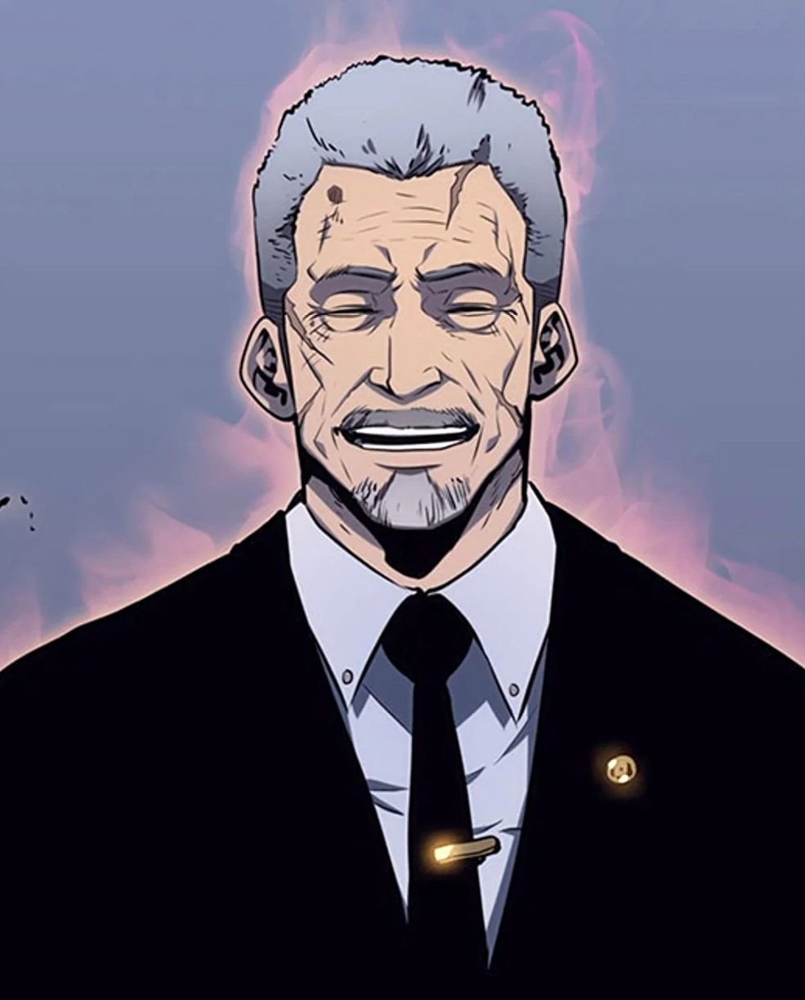

Chairman of the Korean Hunter Association

Go Gun-hee is the Chairman of the Korean Hunter Association and one of the most respected figures in the entire hunter world. In his prime, he was one of Korea's most powerful S-Rank hunters, and even in his old age, his presence commands enormous authority and respect from hunters across the country and beyond.
He was one of the very first people to recognize Sung Jin-Woo's extraordinary potential and kept a close eye on his growth from early on. Unlike many others in power who saw Jin-Woo as a threat or a tool, Go Gun-hee genuinely believed in him and supported him with wisdom and trust rather than control or suspicion.
In his younger years, Go Gun-hee was a fearsome S-Rank hunter whose power was recognized across the world. Although he is now elderly and retired from active raiding, traces of his immense power still remain. He possesses a strong and overwhelming aura that even powerful hunters can feel in his presence, a testament to just how extraordinary he once was at the peak of his abilities.
Go Gun-hee is wise, calm, and deeply experienced. He carries the weight of years of leadership with quiet dignity and never lets personal emotions cloud his judgment. He is fair, perceptive, and genuinely concerned about the safety of both hunters and ordinary citizens. His warm but firm character made him one of the most beloved and trusted authority figures in the Solo Leveling story, and his relationship with Jin-Woo is built on mutual respect and understanding.